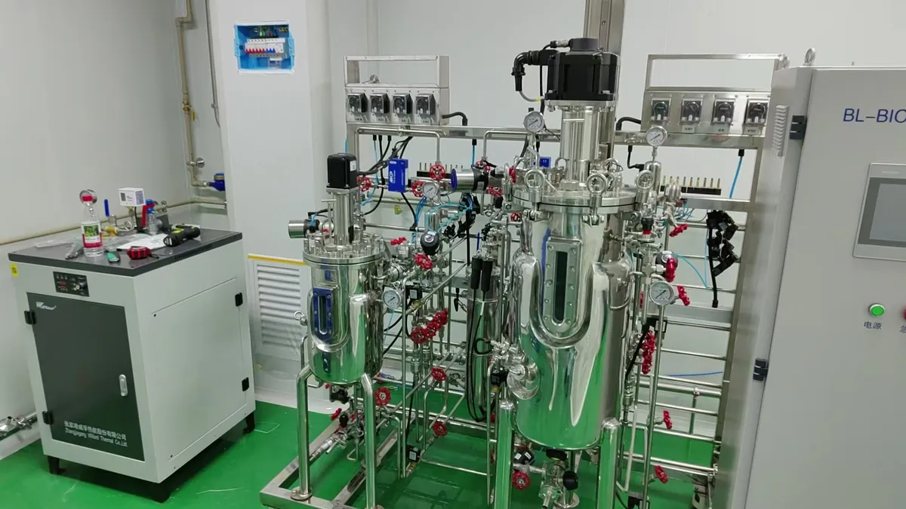
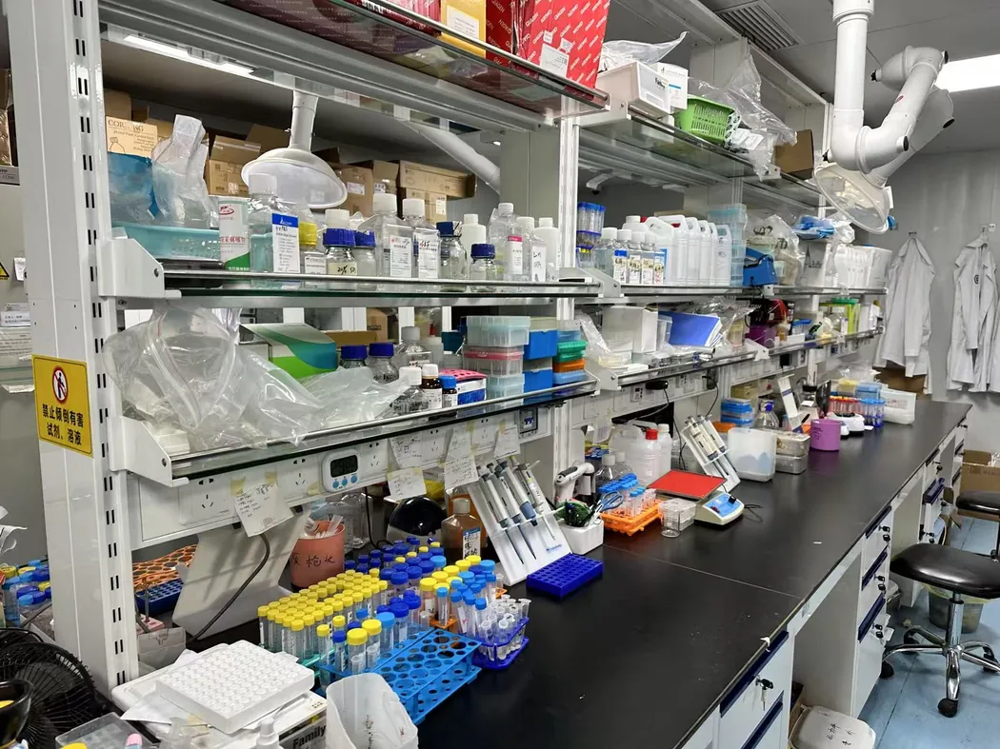
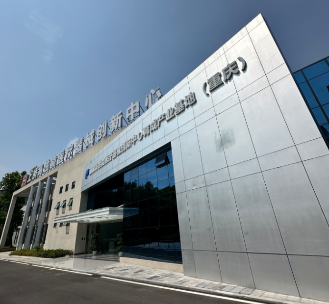
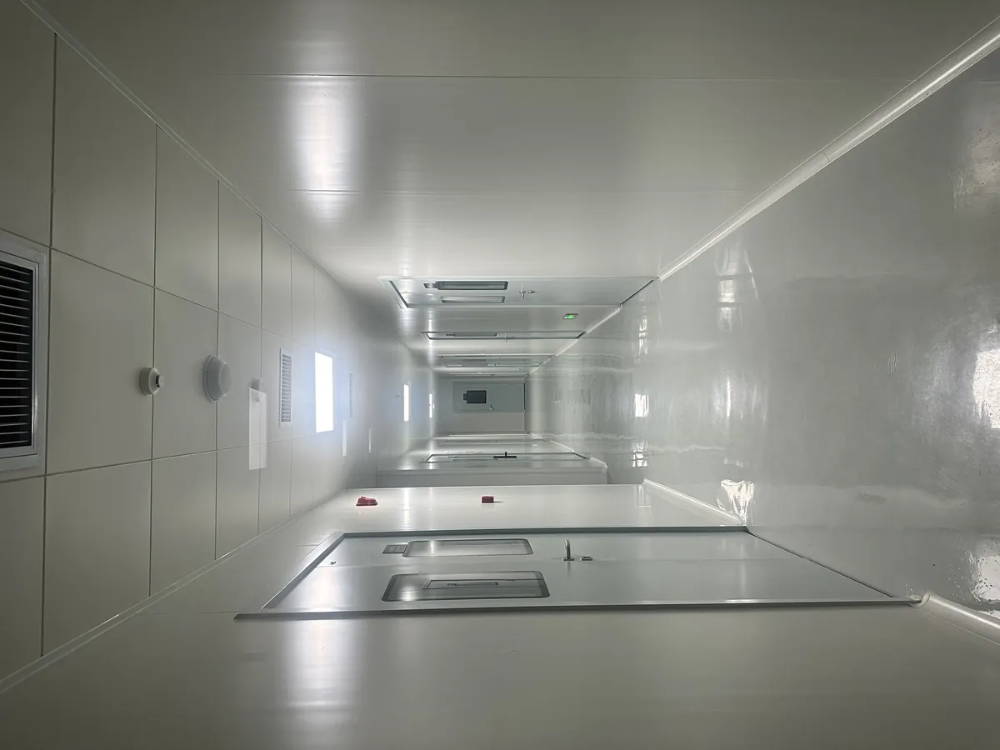

RESEARCH & PATENT
研发与专利
从蛋白工程、实验研究，到产品应用探索。




01 / 04
一条技术主线，
持续向前。
围绕重组人源化丝聚蛋白开展技术探索，让皮肤屏障研究逐步走向产品应用。
股东之一：中科院
重组人源化丝聚蛋白
陆军军医大学毕业成员参与研发
丝聚蛋白相关发明专利资料
股东、团队及专利是企业研发背景，不能替代具体产品的人体功效评价。
RESEARCH & PATENT
从蛋白工程、实验研究，到产品应用探索。




围绕重组人源化丝聚蛋白开展技术探索，让皮肤屏障研究逐步走向产品应用。
股东、团队及专利是企业研发背景，不能替代具体产品的人体功效评价。